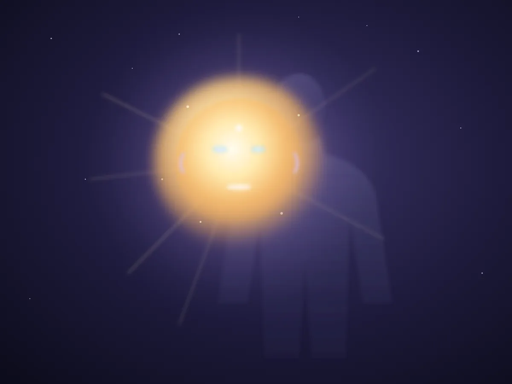

Transmettre
Retour au tout début de l'histoire
Une chose appuie sur une autre, qui appuie sur une autre, jusqu'au résultat.
Avant de lire, essayez.
Le but du voyage : comprendre ce qu'il y a dans une puce et un circuit imprimé.
Jeu 1 · Construire
Six pierres à déplacer jusqu'au mur. Sur le dos, c'est une à la fois. Assemblez la brouette pièce par pièce, chargez-la, poussez.
Glissez chaque pièce sur sa place dans le plan (ou touchez une pièce, puis touchez sa place). Si c'est la bonne place, elle s'enclenche.
Pièce par pièce : chacune a un rôle.
Jeu 2 · Le levier
La pierre pèse 60 kg. Vous pouvez appuyer avec 20 kg de force, pas plus. Déplacez l'appui sous la barre de 2 m, puis appuyez.
Appui à 1,00 m de la pierre, 1,00 m de votre main.
60 kg × 1,00 m ÷ 1,00 m = 60 kg à appuyer
Règle du levier : poids × sa distance à l'appui = force × sa distance à l'appui. (On oublie le poids de la barre, pour simplifier.)
Jeu 3 · La chaîne
Cinq pièces, cinq cases. Placez-les dans le bon ordre, puis appuyez.
Glissez une pièce dans une case, ou touchez-la pour la poser dans la prochaine case libre. Touchez une pièce posée pour la retirer.
Chaque pièce posée vous dira ce qu'elle fait.
Qui appuie en premier?
Chaque invention a enlevé un peu de sueur. Regardez la même tâche, avant et après. ✋ La main, elle, était déjà là : c'est elle qui a tout commencé.
Chaque invention a été reçue, puis retransmise avec un petit changement. Comme en musique : on change les accords sans lâcher le fil. Suivez le fil rouge, et regardez chaque fois comment on faisait avant.
Un levier posé sur une roue. Les bras soulèvent un peu, la roue porte le reste. Un seul jardinier déplace ce qui demandait deux porteurs.
Une dent pousse une dent. Petite roue rapide, grande roue forte. Le mécanisme d'Anticythère, vieux de plus de 2000 ans, en cachait une trentaine pour suivre la Lune et le Soleil.
On tourne une vis en spirale : à chaque tour, elle avance une seule dent de la roue. On tourne vite, la roue bouge lentement mais avec beaucoup de force. Et elle ne revient pas en arrière toute seule.
Le feu chauffe l'eau. La vapeur prend plus de place et pousse un piston. Le piston pousse une bielle, la bielle tourne une roue. Pour la première fois, la poussée ne vient plus d'un muscle.
Une petite explosion d'essence pousse le piston, des dizaines de fois par seconde. Quatre temps : aspirer, comprimer, exploser, expulser. Puis on recommence.
Dans un fil, chaque électron pousse son voisin. La poussée traverse la ville presque instantanément, même si chaque électron, lui, avance à peine.
Le courant va et vient dans une antenne et pousse une onde invisible. Loin, l'onde pousse les électrons d'une autre antenne. La voix traverse l'océan sans aucun fil.
Une radio, un ordinateur et un appareil photo dans la main. Fermé, c'est une boîte magique. Ouvert, c'est encore une chaîne. Touchez les couches pour l'ouvrir.
Touchez « Écran et vitre » pour commencer.
Des hangars remplis de milliers de cellulaires sans écran, empilés en armoires. Ils consomment environ 1,5 % de l'électricité du monde, et il faut les refroidir sans arrêt. Votre photo, votre courriel, votre carte : quelque part, une armoire appuie pour vous.
On l'imagine comme un monstre venu d'ailleurs. Regardez le fil : elle vient d'ici. Elle est faite de tout ce qu'on lui a transmis, nos textes, nos gestes, nos calculs. Nous en sommes la cause. Un bras robot, c'est encore une épaule, un coude, un poignet. C'est notre main, prolongée.
Ce niveau n'existe pas encore. C'est un but, pas un fait. Ce qu'elle deviendra dépend de ce qu'on lui transmet.
Chapitre 2 · Transmettre l'information
Depuis toujours, c'est le même modèle. Quelqu'un émet, un message passe par un canal, quelqu'un reçoit. En route, du bruit l'abîme. La rétroaction, c'est la réponse qui revient. Touchez une époque pour voir ce qui change.
Un message passe par 6 personnes. De bouche à oreille, ou recopié à la main?
« Le forgeron montre la roue à son apprenti »
Reçu à l'autre bout : …
Aide : A = ·— L = ·—·· O = ———
Morse : court ou long. Ordinateur : 0 ou 1. Un bit, c'est une seule question : allumé ou éteint? Vos lettres, comme une puce les stocke (code ASCII, 8 bits par lettre) :
Chapitre 3 · Du levier à la puce
Tout ce site mène ici. Une puce, c'est des milliards de petits interrupteurs. Chacun est un levier où une petite poussée en commande une grande. Et on les imprime, comme Gutenberg imprimait des pages.
Même idée trois fois : un petit qui commande un grand. Jouez-la maintenant, étape par étape.
Circuit imprimé : une plaque où des chemins de cuivre (les pistes) remplacent les fils. Posez les pièces (glissez, ou touchez puis touchez un emplacement). Tracez une piste : touchez une pastille de cuivre, puis une autre. Touchez une LED posée pour la retourner.
Une LED (petite lampe) a un sens : son côté + vers le + de la pile. Une résistance freine le courant pour que la LED ne grille pas. Deux pistes ne peuvent pas se croiser : elles se toucheraient.
Photolithographie : imprimer avec de la lumière. On éclaire un masque (un pochoir du circuit) sur une tranche de silicium recouverte d'un vernis sensible. Là où la lumière passe, le vernis change ; on grave, et le dessin reste. Le même masque est copié des centaines de fois sur la tranche.
Les circuits imprimés se font pareil, mais sur du cuivre : on imprime le dessin des pistes, puis on dissout le cuivre en trop.
Gutenberg, vers 1450 : une forme, des milliers de pages identiques. La puce : un masque, des milliards de transistors identiques.
Dernière étape · La vision de l'auteur

Après les milliards de transistors, je vous propose de regarder encore plus loin : vers celui qui perçoit.
Pour moi, l'être spirituel est une boule de lumière. Avant de percevoir avec le corps physique, il crée d'abord ses propres perceptions lumineuses : des yeux de lumière, une bouche de lumière, toutes les perceptions.
Ce corps de lumière est éternel. Le corps physique, lui, est une ouverture : un instrument pour vivre ici. Mais l'être n'est pas enfermé dedans. Il se tient légèrement devant le corps.
Comme une puce reçoit et retransmet, le corps reçoit et retransmet. Celui qui perçoit, lui, est la lumière.
Montrez le jeu du drapeau à quelqu'un. Vous venez de faire la même chose que le premier forgeron.
Rejouer